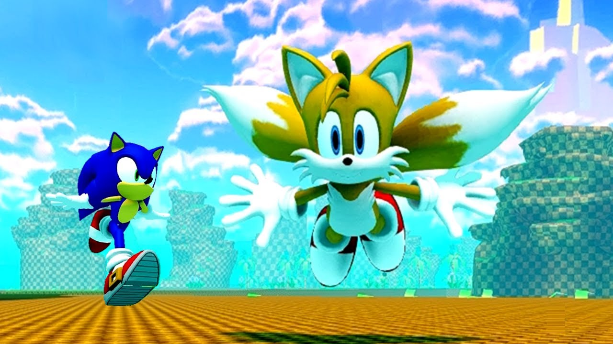
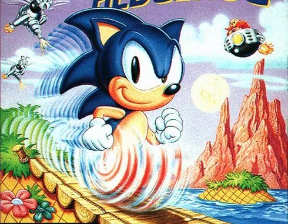

Game Gear[a] is an 8-bit fourth generation handheld game console released by
Sega on October 6, 1990, in Japan, in
April 1991 throughout North America and Europe,
and during 1992 in Australia. The Game Gear primarily competed with Nintendo's
Game
Boy, the Atari Lynx, and NEC's TurboExpress. It shares much of its hardware with the
Master System, and can play Master
System games by the use of an adapter. Sega
positioned the Game Gear, which had a full-color backlit screen with a landscape
format, as a technologically superior handheld to the Game Boy.

 The Game Gear was rushed to market, its unique game library
and price
point gave it an edge over the Atari Lynx and TurboExpress. However, due to
its short battery life,
lack of original games, and weak support from Sega, the
Game Gear was unable to surpass the Game Boy, selling 10.62
million
units by March 1996. The Game Gear was discontinued on April 30,
1997. It was re-released as a budget system by Majesco
Entertainment in 2000, under license from Sega.
Reception of the Game Gear was mixed, with praise for its
full-color backlit screen and processing
power for its time,
criticisms over its large size and short battery life, and questions
over the quality of
its game library. The Game Gear Micro, a
retroconsole, was announced in June 2020 and released in
October of the
same year.
